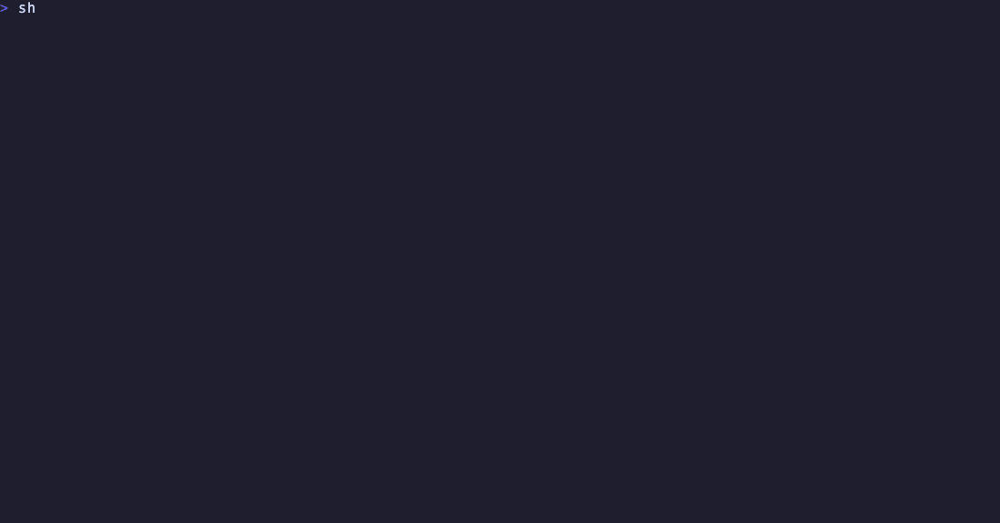

passk
Reliability CI for computer-use agents. Your agent passed the demo. Will it pass the tenth time?
passk forks one Solari desktop snapshot k times, runs your agent on every fork, grades each run inside the VM after the agent stops, and fails the build unless the pass rate clears the bar. Nothing the agent says about its own success counts.
In your agent's CI
- uses: tohirr/solari-cookbook/passk@main
with:
task: tasks/ticket-queue.yaml
k: 10
require-lower: 0.7 # fail unless the 95% lower bound on the pass rate clears 70%
env:
SOLARI_API_KEY: ${{ secrets.SOLARI_API_KEY }}
OPENAI_API_KEY: ${{ secrets.OPENAI_API_KEY }} # or ANTHROPIC_API_KEY
The runner needs no display. The desktops are Solari's, booted from one
snapshot in about a second each, so every attempt starts byte-identical and
ten runs cost cents on a budget model. The job summary gets the verdict,
every run as a glyph, the interval, the checks that missed and the failed
runs; the artifact gets the report with every screenshot. Every input and
output is in action.yml; the repo's own
workflow runs the action on every push.
Or on your machine
No keys, forty seconds, the whole pipeline on in-memory desktops:
git clone https://github.com/tohirr/solari-cookbook.git && cd solari-cookbook/passk && npm install
PASSK_PROVIDER=scripted npm run passk run tasks/fake.yaml -- --k 10

The real thing, with a Solari key and an
OpenAI or Anthropic key in .env (copy .env.example; doctor checks both):
npm run passk doctor
npm run passk run tasks/ticket-queue.yaml -- --k 10
open runs/ticket-queue-*/report.html
A task is ten lines of YAML
id: notes
name: Save a note in Mousepad
setup: # runs once, before the snapshot
- open: mousepad
- wait: 4
prompt: > # exactly what a user would type
Type "hello" and save it as notes.txt in Documents.
golden: # the correct outcome with no agent, so run can prove the checks
- write: /root/Documents/notes.txt
content: hello
checks: # graded inside the desktop after the agent stops
- type: file_contains
path: /root/Documents/notes.txt
text: hello
Anything whose state lives inside the desktop works: desktop applications, files and PDFs, a web tool served from inside the VM. Setup can exec, upload, open apps, click and type; checks read files, run commands, or as a last resort have the model judge the final screen. Before any agent runs, the checks must fail on the untouched snapshot and pass after the golden steps, or the bench refuses to start. The format, the shipped tasks and what is out of scope are in the manual.
What you get back
- Observed passes with a 95% interval. 10/10 is a lower bound of 72%, not proof of 100%.
- pass^k, the chance all k attempts in a row succeed. 80% pass@1 is 33% pass^5. This is the number a user feels.
- Per check, how often each rule was met, so a pass rate becomes a diagnosis.
- For each failure, the first step where it diverged from a passing run, and a cause hypothesis.
- Steps, seconds and model spend per run, and cost per success with the failed attempts counted.
- Runs lost to infrastructure, listed and never scored against the agent.
- Every screenshot, every action, the checks as run, and a hash of the task, so the number is auditable.
Change one thing, compare
npm run passk run tasks/ticket-routing.yaml -- --k 20
npm run passk run tasks/ticket-routing-reload.yaml -- --k 20 --snapshot snap_… # same snapshot
npm run passk compare runs/ticket-routing-2*/ runs/ticket-routing-reload-*/
compare puts two conditions from one snapshot side by side: what was held
fixed, what changed, the delta in passes, effort and cost per success, the
same delta per check, and Fisher's exact p for the pass/fail split. It
refuses to attribute a difference when more than one thing changed, and it
says when the sample is too small to say anything.
The picture is one worked example
from evidence/, run while building the tool on one budget model at small
k. Read it as a demonstration of what the pages contain, not as a finding;
it will be re-run.
Ten things learned about Solari
Everything in docs/SOLARI-NOTES.md was found on a
live VM while building this, and cost an afternoon each. Among them: key
chords must be one string or you get a literal "s"; Chrome will not upload a
file from /root; a snapshot id can come back before the snapshot exists.
Solari's team may find the first four worth a changelog entry.
How this differs from other agent tests
EvalView snapshots a chat agent's tool-call trajectory and diffs it; the Azure and Bedrock evaluation actions score a chat agent's answers with an LLM judge. passk is for agents that drive a screen, it verifies the world rather than the transcript, and its runs start from the same bytes, which is what makes k attempts comparable and pass^k meaningful. The method, the intervals and the paper the question comes from are in Method.
After the first bench
npm run passk compare runs/A runs/B # what changed, what moved, and whether it could be noise
npm run passk gate runs/dir -- --require-lower 0.7 # exit 2 in CI if a saved bench misses the bar
npm run passk export-inspect runs/dir # the bench as an Inspect AI log, next to it, for `inspect view`
Docs
- Manual: setup, the task format, what
rundoes, the shipped tasks, experiments, benching your own agent, scope. - Method: intervals, who gets blamed for what, how many runs, resume, testing the harness, safety.
- Notes from building on Solari.
- Evidence: the worked example, with every screenshot that carries proof.